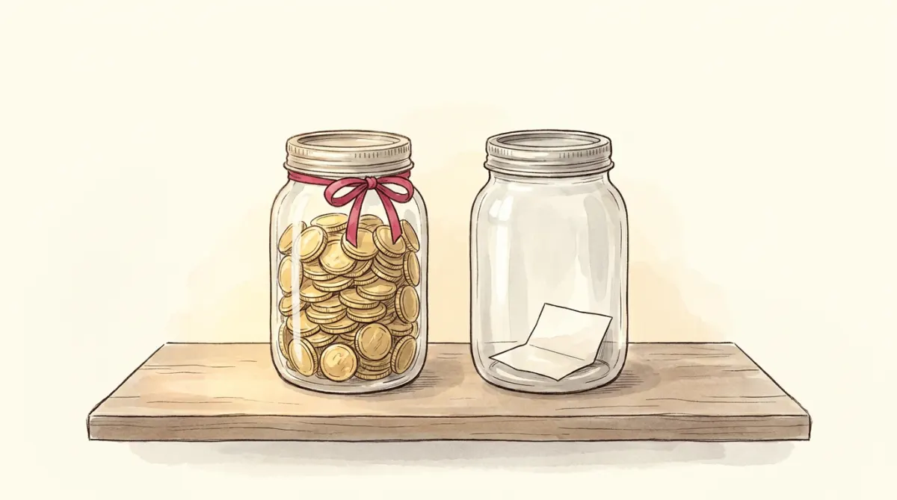

Picture a small town with one giant communal oven. Every year the town bakes one pie. The size of that pie is decided by three things and three things only: how many ovens the town has, how many bakers show up, and how good the recipe is. Not by wishes, not by the mayor, not by the price of pie.
That is the long-run economy. In the notation of the course:
Y = F(K, L)
In the long run all three are taken as fixed, so output is a fixed number: Y = Ȳ. Economists write the bar on top to say "this one does not move today". The pie is baked; the interesting question becomes who eats it.
Short run and long run are not calendar labels; they are statements about prices. In the short run many prices are stuck (contracts, catalogs, menus). Given enough time, everything gets renegotiated and reprinted, markets clear, and production settles at what the ovens, bakers and recipe allow. Chapters 4 to 8 of the course all live in this flexible-price world. The sticky world is Macro-05's.
The pie gets eaten by three groups, the same three spenders you met in Macro-01's GDP formula:
Add the plates and you get demand for pie: C + I + G. Supply of pie is the fixed Ȳ. Something has to make these equal, and it cannot be production (fixed) or prices (already done adjusting). It is the interest rate. To see how, follow the crumbs to the pantry.
Whatever the town does not eat this year goes into the pantry as preserves. In economic words, income not spent on consumption or government purchases is national saving:
S = Y − C − G
It splits into two jars:

And who takes preserves out of the pantry? The builders. Investment is financed by borrowing saving. The pantry is the course's loanable funds market: saving supplies funds, investment demands them, and the price of borrowing them, the thing that moves until supply meets demand, is the real interest rate r. Equilibrium in the pantry (S = I) and equilibrium at the table (Y = C + I + G) are the same equation rearranged, which is why one interest rate clears both.
A real mock-exam computation. Y = 1150, T = 300, C = 765, G = 310. National saving?
1. S = Y − C − G = 1150 − 765 − 310 = 75. That is the whole answer, worth one full point.
2. For understanding, split it: private = (1150 − 300) − 765 = 85. Public = 300 − 310 = −10, a deficit.
85 − 10 = 75. Households filled the pantry; the government quietly ate a jar. Watch the distractors: the exam offers 85 and −10 as wrong options, hoping you stop halfway.
Here is the whole chapter as a machine. The amber vertical line is saving: vertical because in this model saving does not care about r (households save what they save). The blue curve is investment demand, sloping down because borrowing gets less attractive as r rises. The dot is the economy. Above the graph, the pie shows who is eating what.
Press "Investment boom". Firms want to invest more at every r, the blue curve jumps right... and equilibrium investment does not change. The pantry holds a fixed amount of preserves; more hungry borrowers just bid the price up until desire shrinks back to what is actually on the shelves. On the mock this is question 6, and "I increases" is the tempting wrong answer. The right one: I remains unchanged (r does all the moving). This changes only if saving responds to r, which the slides mention as an extension.
When the government eats more pie without collecting more taxes, the pantry empties, borrowing gets pricier, and builders build less. Government spending crowds out investment. This is not just a diagram; the slides check it against the Reagan years, when US defense spending rose and taxes were cut at the same time:
| 1970s | 1980s | the model says | |
|---|---|---|---|
| T − G (public saving, % of GDP) | −2.2 | −3.9 | deficit widens |
| S (national saving, % of GDP) | 19.6 | 17.4 | saving falls ✓ |
| r (real interest rate, %) | 1.1 | 6.3 | rises ✓ |
| I (investment, % of GDP) | 19.9 | 19.4 | falls ✓ |
Every arrow the pantry predicts shows up in the data. This is what the course means by "taking a model to the data", and it is the story to have in your head when a question starts with "the government increases spending" in a long-run chapter.
The reflexes, isolated. Long run, fixed pie, one change at a time.
| Change | S line | r | I | C |
|---|---|---|---|---|
| G↑ (T fixed) | left | ↑ | ↓ | unchanged |
| T↑ (G fixed) | right (by MPC·ΔT) | ↓ | ↑ | ↓ |
| Investment boom (I curve right) | does not move | ↑ | unchanged | unchanged |
| MPC↑ / saving incentives↓ | left | ↑ | ↓ | ↑ |
| National saving | S = Y − C − G |
| Private / public split | (Y − T) − C and T − G |
| Consumption rule | C = C̄ + MPC·(Y − T) |
| Pantry equilibrium | S = I(r), and r is the price that clears it |
One subtraction, one straight line, one crossing point. That is the entire long-run model.
Six questions, real mock-exam style: +1 right, −⅓ wrong, 0 skip.